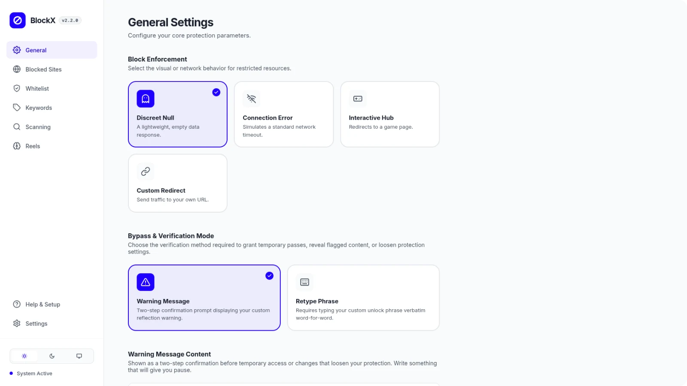

BlockX 2.0
2026 — Browser ExtensionAn open-source content-filtering Chrome extension engineered for distraction-free browsing. Built with real-time DOM scanning, unified custom domain rules, and strict browser policy controls inside a minimal settings interface.
View repository